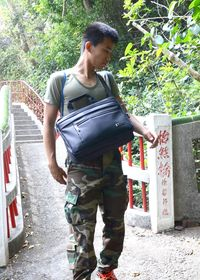

【訪談心得】 |
|
| 子瑝訪談心得： 開心可以訪問李先生，他讓我學到了一些沒聽過的詞彙，故事讓我學了很多增加了許多知識，真的好希望可以有更多的時間我好想在繼續聽，那些傳奇故事，與神蹟，那些故事讓我很驚奇，原來以前還有這種神奇的事情發生，每次聽說完故事之後，我一直幻想著那些事情有沒有可能發生在我身上，那之後要怎麼處理呢？真的很佩服李先生，他居然記得起來那些神奇故事和 神蹟。 |
|
| 昌逸訪談心得: 之前自己去那邊根本不知道那些東西的由來，所以說去那邊，根本是去那邊運動的，這次去跟老師去清水巖解說員一個一個跟我們詳細介紹，介紹了很多東西，例如；防空洞、石像、還有一些有的沒的，防空洞那一段路超難走的，裡面還有一大堆垃圾，很好奇，為甚麼要去那邊亂丟垃圾呢!?裡面還有2隻很可愛的蝙蝠正在休息，我們之後都很開心有這個介紹。 |
|
| 培倫訪談心得: 經過李俊福先生的解說，讓我們見識到許多豐富的文化知識，也讓我們更了解清水巖和清水寺的事蹟和歷史。他也帶我們進入的龍蟠洞，介紹龍蟠洞裡面的東西，這龍蟠洞裡面黑漆漆的沒有帶手電筒、手機，根本看不到，以前我很怕進去黑漆漆的洞裡面，因為怕進去了在也出不來，現在一點點不會怕了….還有帶我們先鋒湖介紹先鋒湖的歷史，這次能出來訪談很開心!!現在也知道了清水嚴的歷史。 |
|
|  | 美任訪談心得: 在這一次的訪談中,雖然我是新手,但也表現的中規中矩,這次為我們說的人員是一個姓李的解說員,李解說員是一個對清水寺非常有深造的解說員對寺廟的研究也很深,裡解說員講得很詳細,也很精采,雖然有些台語我聽不懂可是至少也有聽到,我們走了隧道,爬了山,今天算是有運動到了,今天雖然很累,但也值得了,因為有聽到精彩的演講。 |
| 澤丞訪談心得: 經過李俊福先生的訪談，讓我們了解了許多豐富的文化知識，也讓我們更加深入了解許多有關清水巖的歷史，也因為有李先生的帶領之下我們進入了山洞，以前來時都覺得山洞給人的感覺就是陰森森的感覺，因為李先生讓我對山洞的感覺大大改觀，其實山洞並沒有我想像的可怕，裡面蘊藏了許多豐富的文化資產，裡面也有一些平常見不到的動物，還有裡面的奇特地形，出來山洞以後覺得通體舒暢，因為山洞非常的矮。經過這趟旅行讓我學習到非常多。 |
|
| 麒恩訪談心得： 此次的採訪，我們的問得很多，學得也很多，李先生說了很多我從來沒聽過的東西，像是:寺廟的出入口、寺廟廁所的位置、寺廟牆上的名稱、和原日軍戰備坑道以及唐榮墓園的介紹；但是李先生說的有些地方因為台灣國語，所以不懂的地方都要一再的提問，十分苦惱；但是在坑道中，有股十分可怕的感覺，很陰森，而且我的頭還被老師當墊腳石，我的犧牲有夠大(哭哭)，還有遇到兩隻蝙蝠，他們都沒感到害怕，可以近距離看到他們的樣貌，真棒!!；還有那個唐榮墓園，走好久阿，快累死我了，但我們的付出一切一定都是值得的! |
|
| 傑諺的訪談心得： 謝謝老師給我這次的機會參加網際博覽會，不然我可能一輩子都不可能來這邊，我覺得這次最有趣也最刺激的因該是龍蟠洞，裡面有好多日治時期的人打讓留下來的東西沒想好小小又難爬的洞可以有那麼多的東西，竟然還有會議室真的是讓我大開眼界，出乎我的意料之外，也讓我留下了美好回憶。 |
|
| 佳惠的訪談心得： 前幾天在規畫去參訪時，在網路上看到清水嚴的特色.文化，當下就決定去看看。其實我前往林園路經這兒已多次，就是一直沒機會進去一看看，這次特別安排一趟清水巖探訪之旅.真的讓我大開眼界。 |
|